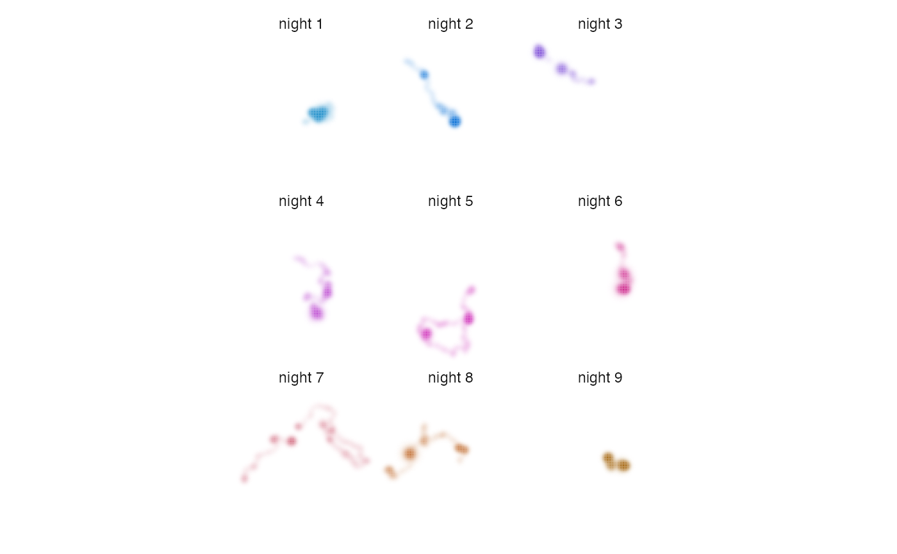

This function enables visualization of distributional information in a series of small multiples by combining distribution metrics and an HCL color palette.
map_multiples(x, palette, ncol, lambda = 0, labels = NULL, return_df = FALSE)
| x | RasterStack of distributions processed by |
|---|---|
| palette | data frame containing an HCL color palette generated using
|
| ncol | integer specifying the number of columns in the grid of plots. |
| lambda | number that allows visual tuning of intensity values via the
|
| labels | character vector of layer labels for each plot. The default is to not show labels. |
| return_df | logical specifying whether the function should return a ggplot2 plot object (FALSE) or a data frame containing the raster data and associated cell colors. |
A ggplot2 plot object of the map. Alternatively, return_df = TRUE
will return a data frame containing the raster data in data frame format
along with the associated cell colors. The data frame columns are:
x,y: coordinates of raster cell centers.
cell_number: integer indicating the cell number.
layer_cell: a unique ID for the cell within the layer in the format
"layer-cell_number".
intensity: maximum cell value across layers divided by the maximum
value across all layers and cells; mapped to alpha level.
specificity: the degree to which intensity values are unevenly
distributed across layers; mapped to chroma.
layer_id: the identity of the raster layer from which an intensity
value was pulled; mapped to hue.
color: the hexadecimal color associated with the given layer and
specificity values.
The lambda parameter allows for visual tuning of highly skewed
distribution data. It is not uncommon for distributions to contain highly
skewed intensity values because individuals spend a vast majority of their
time within a relatively small area or because populations are relatively
dense during some seasons and relatively dispersed during others. This can
make visualizing distributions a challenge. The lambda parameter transforms
intensity values via the scales::modulus_trans() function, allowing users
to adjust the relative visual weight of high and low intensity values.
Other map:
map_single()
# load fisher data data("fisher_ud") # prepare data r <- metrics_pull(fisher_ud) # generate palette pal <- palette_timeline(fisher_ud) # produce maps # set lambda to make areas that were used less intensively more conspicuous map_multiples(r, pal, lambda = -5, labels = names(r))